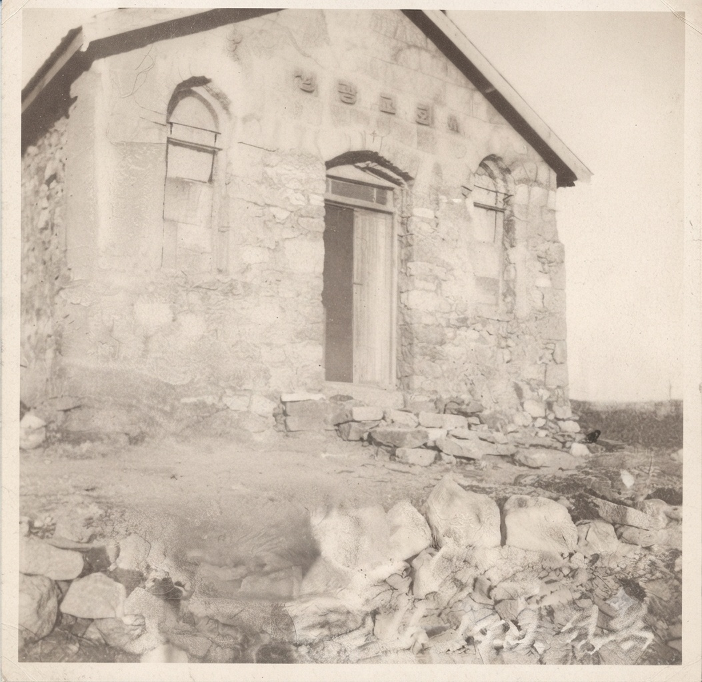

구술사료로 되짚는 성광교회의 시작
손양원 목사 순교 이후, 정양순 사모는 세상과 타협하지 않고 오직 진리 중심의 신앙 노선을 지키기 위해 자신의 사택에서 조용히 가정 예배를 드립니다. 이 예배가 바로 성광교회 역사의 출발이 됩니다.
* 본 구술자료는 "교회 출발 시점"을 증언과 기록으로 규명하는 데 집중합니다.

실선 원은 비교적 확실한 시기, 점선 원은 추정·미확정 시기입니다.